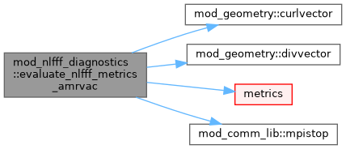
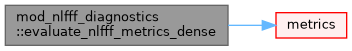
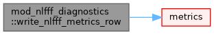

|
MPI-AMRVAC 3.2
The MPI - Adaptive Mesh Refinement - Versatile Advection Code (development version)
|
Common user-facing diagnostics for NLFFF relaxation and extrapolation. More...
Data Types | |
| type | nlfff_physical_metrics |
Functions/Subroutines | |
| subroutine, public | evaluate_nlfff_metrics_amrvac (iw_b, metrics) |
| Evaluate the common metrics on all active AMRVAC cells. The local cell size makes epsilon_force and epsilon_div dimensionless on AMR meshes. | |
| subroutine, public | evaluate_nlfff_metrics_dense (b, dx1, dx2, dx3, metrics) |
| Evaluate the same metrics on a replicated uniform dense field. Plane 1 is the lower boundary and planes 2:nz are the active-cell centres. | |
| subroutine, public | write_nlfff_metrics_header (unit) |
| subroutine, public | write_nlfff_metrics_row (unit, iteration, metrics) |
Common user-facing diagnostics for NLFFF relaxation and extrapolation.
| subroutine, public mod_nlfff_diagnostics::evaluate_nlfff_metrics_amrvac | ( | integer, dimension(3), intent(in) | iw_b, |
| type(nlfff_physical_metrics), intent(out) | metrics | ||
| ) |
Evaluate the common metrics on all active AMRVAC cells. The local cell size makes epsilon_force and epsilon_div dimensionless on AMR meshes.
Definition at line 25 of file mod_nlfff_diagnostics.t.

| subroutine, public mod_nlfff_diagnostics::evaluate_nlfff_metrics_dense | ( | double precision, dimension(:,:,:,:), intent(in) | b, |
| double precision, intent(in) | dx1, | ||
| double precision, intent(in) | dx2, | ||
| double precision, intent(in) | dx3, | ||
| type(nlfff_physical_metrics), intent(out) | metrics | ||
| ) |
Evaluate the same metrics on a replicated uniform dense field. Plane 1 is the lower boundary and planes 2:nz are the active-cell centres.
Definition at line 95 of file mod_nlfff_diagnostics.t.

| subroutine, public mod_nlfff_diagnostics::write_nlfff_metrics_header | ( | integer, intent(in) | unit | ) |
Definition at line 168 of file mod_nlfff_diagnostics.t.
| subroutine, public mod_nlfff_diagnostics::write_nlfff_metrics_row | ( | integer, intent(in) | unit, |
| integer, intent(in) | iteration, | ||
| type(nlfff_physical_metrics), intent(in) | metrics | ||
| ) |
Definition at line 175 of file mod_nlfff_diagnostics.t.
